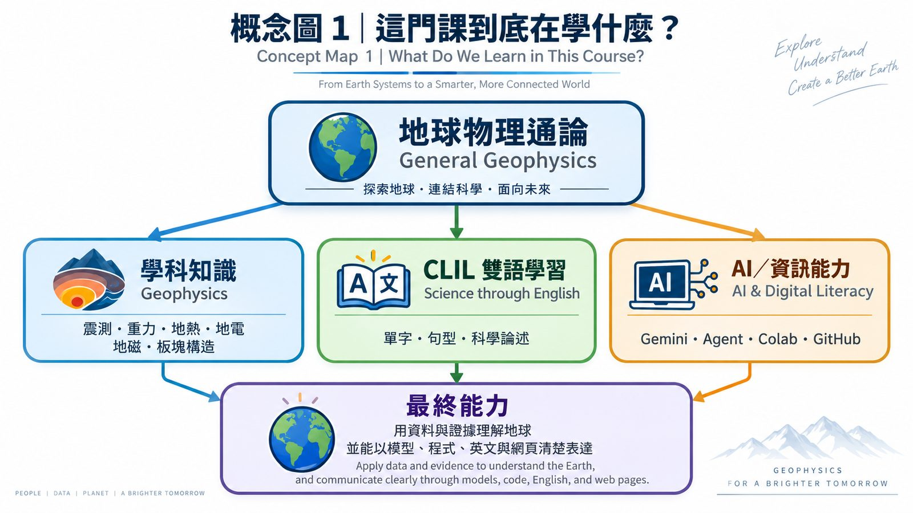
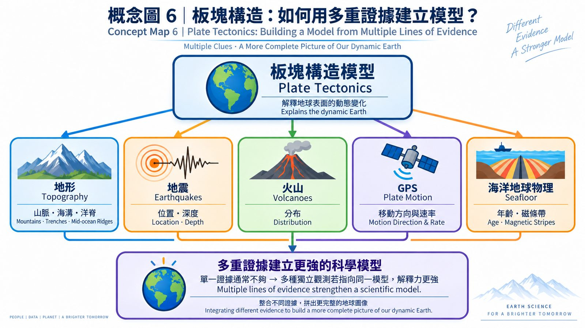
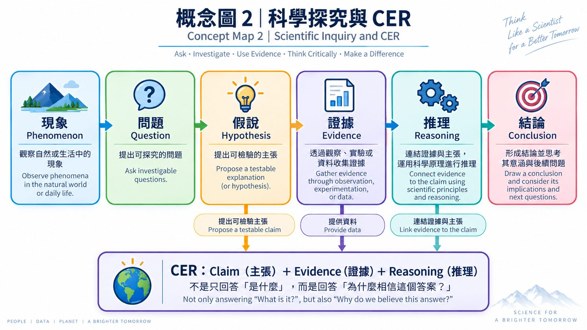
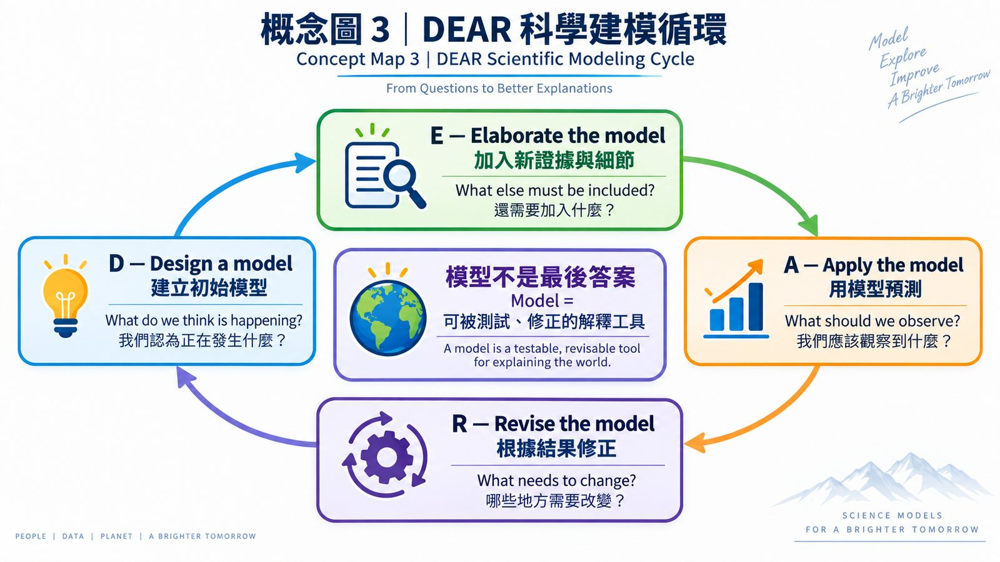
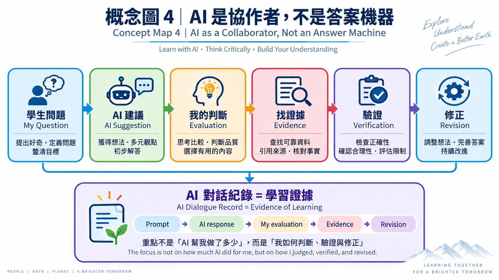
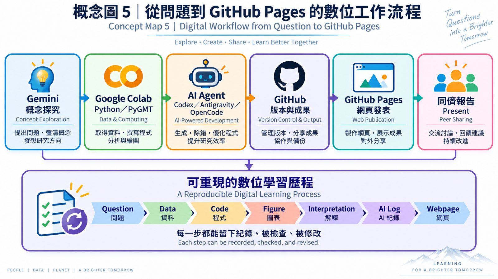

How do we know?
Week 1 · Course Orientation
用資料與證據理解地球
臺北市立大學 地球環境暨生物資源學系 第 115 學年第 1 學期。今天不是背完所有工具，而是弄懂：這學期我們要怎麼學地球物理。
What evidence supports this idea?
什麼證據支持這個想法？
Understanding the answer is your responsibility.
AI 可以產生答案，理解是你的責任。
觀察資料→提出模型→檢驗模型→修正模型→說明證據
這門課在學什麼
如果我們不知道板塊構造理論，只拿到地形、地震、火山、重力、磁力與熱流資料，能不能自己推論地球正在發生什麼事？
學科知識
Geophysics
震測、重力、地熱、地電、地磁、板塊構造。
雙語學習
CLIL / Science through English
單字、句型、科學論述、中英文報告。
資訊與 AI
Digital Literacy
Gemini、AI Agent、Colab、GitHub、PyGMT、3D 建模。

點圖可放大。期末每組完成 GitHub Pages 網站，並用中英文口頭報告。
18 週學習路線
點選週次，投影片式帶過整學期。Week 1 就是今天。
點一個週次，看任務重點。
| 評量 | 比例 | 看什麼 |
|---|---|---|
| 期中考 | 40% | 概念、原理、方法 |
| 作業 | 50% | 過程：Colab、PyGMT、AI 紀錄、網頁 |
| 平時 | 10% | 出席、討論、提問 |
今日三小時任務地圖
教師可把「現在進行」釘在當下任務；勾選表示全班已完成。休息可用上方 10 分鐘計時。
地球物理是什麼
How can we study something we cannot directly see? 我們量測地震波、重力、磁場、電性與熱流，再推論地下構造。
Observe→Analyze→Infer
| 方法 | 觀測什麼 | 可以推論什麼 |
|---|
今日核心問題：為什麼地震、火山、山脈與海溝常常不是隨機分布，而是集中在某些帶狀區域？先不要急著回答「板塊構造」。

CER 課堂白板
Claim 主張 · Evidence 證據 · Reasoning 推理。可載入範例，也可即席輸入，用「投影放大」給全班看。
課堂即席題
Claim
Evidence
Reasoning

DEAR 科學建模循環
模型不是最後答案，而是可被測試、修正的解釋工具。點 D／E／A／R，把小組討論寫在右側。
D — 我們認為正在發生什麼？

CLIL 句型牆
整學期反覆使用的 10 句。點編號切換；「全班朗讀」會變成投影大字。
1 / 10
We observe that ______.
我們觀察到＿＿＿＿。
科學論述六句組
句型抽卡
AI 是協作者，不是答案機器
1 學生問題
提出好奇、定義問題。
2 AI 建議
獲得想法與多元觀點。
3 我的判斷
選擇有用的內容。
4 找證據
查資料、核對事實。
5 驗證
確認合理性與限制。
6 修正
調整想法，持續改進。
AI 對話紀錄 = 學習證據。 Prompt → AI response → My evaluation → Evidence → Revision。

從問題到 GitHub Pages
Gemini→Colab / PyGMT→AI Agent→GitHub→Pages→同儕報告
Question → Data → Code → Figure → Interpretation → AI Log → Webpage

GitHub 今日任務
建立 repository（建議 geophysics-learning-2026），寫下第一版 README。
Colab 今日任務
print("Hello, Geophysics!")，並記住走時 t = d / v。
Gemini 探究 Prompts
課堂示範可直接複製。原則：不要直接要答案，先要三個可檢驗的假說。
第一堂課作業
作業一｜工具確認
- GitHub 帳號與練習 repo 連結
- Google Colab notebook
- Gemini 對話紀錄
- 小組名單
作業二｜AI 探究紀錄
主題：為什麼地震、火山、山脈與海溝常常集中在某些帶狀區域？
繳交：對話紀錄、CER、DEAR、100–200 字反思。
下週：PyGMT — Visualizing the Earth。請帶筆電、Google 帳號、GitHub 帳號與今天的 AI 紀錄。
Exit Ticket
離開前三句。可存在這台電腦，也可下載成 Markdown。